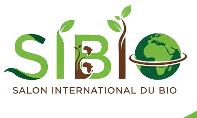

09:00 - 10:00
Ouverture officielle
Discours d'accueil et visite des autorités.

SIBIO
Programme du salon, répartition des activités et retour sur les éditions SIBIO 2022 et 2024.
Ouverture dans :
Jours
Heures
Minutes
Secondes

| Jour | Thème | Activités principales |
|---|---|---|
| Mardi | Économie Bleu, Vert et Jaune | Cérémonie d'ouverture, panels et ateliers. |
| Mercredi | Climat | Diplomatie verte et solutions face au changement climatique. |
| Jeudi | Biodiversité | Préservation de la biodiversité et ateliers. |
| Vendredi | Désertification | Vision 2030, pitch IA & Bio et clôture Label Lbio. |
| Samedi | Cultures ancestrales | Exhibitions et dîner bio de récompense. |
Lancement officiel du Label Bio (Lbio), pitch projets « IA & Bio » et dynamique communautaire autour du bio.
Discours d'accueil et visite des autorités.
Débat sur les pratiques durables et l'avenir du bio.
Dégustation de produits bio locaux.
Cuisine bio, permaculture, cosmétiques naturels.
Rencontre avec producteurs et experts.
Remise de prix et fermeture du salon.
La première édition du Salon International du Bio, SIBIO22, s'est tenue les 25 et 26 novembre 2022 au village Brebo à Amado Laguna, sous le thème « Produits Bio, symbole d'une consommation authentique et naturelle ».
Placée sous le parrainage du Député-Maire de Bingerville ISSOUF Doumbia, avec le soutien du Ministère du Tourisme et la collaboration de BERET-CI et SIDAF-CI.
Deuxième édition organisée du 26 au 28 juillet 2024 à Moossou, Grand-Bassam, autour du thème : « Production Biologique dans une Approche Agroécologique : Quels Avantages pour l'Afrique ? »
Patron du SIBIO 2024, Président du CESEC et du Conseil Régional Sud-Comoé.
Ministre d'État, Ministre de l'Agriculture, du Développement Rural et des Productions Vivrières.
Préfet du département de Grand-Bassam.
Maire de Grand-Bassam et Parrain du SIBIO.
Stands
Visiteurs
Docteurs (PhD)
Médias
Universités impliquées
Le SIBIO 2024 a mis en lumière l'urgence d'une transition vers une agriculture biologique et agroécologique en Côte d'Ivoire et en Afrique, avec un accent sur la résilience climatique, la sécurité alimentaire et la régénération des sols.
Agroforesterie, intrants bio, valorisation des déchets, marketing digital, IA, drones, incubations de jeunes agripreneurs et alignement avec les engagements climatiques nationaux.

.jpeg)